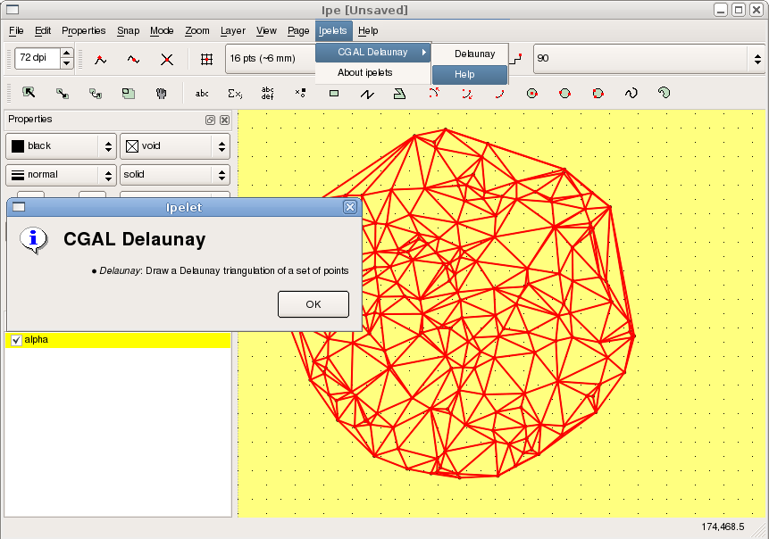

- Author
- Olivier Devillers, Sébastien Loriot, and Sylvain Pion
Introduction
The Ipe extensible drawing editor (http://tclab.kaist.ac.kr/ipe/) [2], [1] is a tool used by computational geometry researchers to produce 2D figures for inclusion in articles or presentations. The extensible adjective sheds a light on an important feature: the possibility for users to write small extensions (called ipelets) to interface any algorithm with Ipe. This feature is especially interesting to produce illustrations in a paper describing a new algorithm. This package provides one class that eases the writing of ipelets based on CGAL, reducing the needed knowledge of the API of Ipe. This class is designed to fulfill most of the needs to implement an ipelet for a 2D CGAL algorithm. In addition, this package comes with more than ten complete examples of ipelets: alpha-shape, arrangements, Voronoi diagrams, convex hulls, Hilbert curve, k-order Delaunay, 2D mesh, Minkowski sum, polygon partition, random generators, triangulations \( \dots\)
CGAL Ipelets
The class Ipelet_base derives from the class Ipelets from Ipe and has one template parameter indicating which kernel must be used within the ipelet. In practice, we recommend to use either Exact_predicates_exact_constructions_kernel or Exact_predicates_inexact_constructions_kernel.
Two main methods are provided by the Ipelet_base class. The first one, read_active_objects retrieves all primitives selected in Ipe when calling an ipelet, and converts them into equivalent CGAL objects. The second method, draw_in_ipe draws CGAL objects in the Ipe window. These functions handle basic objects such as points, segments, polygons, circles and circular arcs.
The registration of an ipelet into Ipe can be done using the macro CGAL_IPELET. CGAL_IPELET(ipelet_class_name) must follow the definition of the ipelet class, in the same file source file.
Example
The following example shows how the class Ipelet_base can be used to easily interface the CGAL 2D Delaunay triangulation with Ipe.
File CGAL_ipelets/simple_triangulation.cpp
#include <CGAL/Exact_predicates_inexact_constructions_kernel.h>
#include <CGAL/Delaunay_triangulation_2.h>
#include <CGAL/CGAL_Ipelet_base.h>
namespace my_triangulation{
typedef CGAL::Delaunay_triangulation_2<Kernel> Delaunay;
const std::string labels[] = { "Delaunay","Help" };
const std::string hmsg[] = {
"Draw a Delaunay triangulation of a set of points"
};
class Triangulation_ipelet
public:
Triangulation_ipelet()
:
CGAL::Ipelet_base<Kernel,2>(
"CGAL Delaunay",labels,hmsg){}
void protected_run(int);
};
void Triangulation_ipelet::protected_run(int fn)
{
switch (fn){
case 1:
show_help();
return;
default:
std::list<Point_2> pt_lst;
read_active_objects(
CGAL::dispatch_or_drop_output<Point_2>(std::back_inserter(pt_lst))
);
if (pt_lst.empty()) {
print_error_message("No mark selected");
return;
}
Delaunay dt;
dt.insert(pt_lst.begin(),pt_lst.end());
draw_in_ipe(dt);
};
}
}

Installation of the Demo Ipelets
Some working ipelets can be found within the demo directory of this package. To install them you need to go to the demo directory of the package and run cmake. The compilation of these demo requires the source tree and the library of Ipe. If your Ipe installation is not detected you need to set the cmake variables IPE_INCLUDE_DIR and IPE_LIBRARIES. If you want to install ipelets automatically (using make install for example) you also need to set the cmake variable IPELET_INSTALL_DIR, if the ipelet installation path has not already been detected. These ipelets have been tested with the versions 6.0pre28 to 6.0pre32 of Ipe, as well as with the version 7 (at least up to version 7.10). These ipelets are a good starting point to design your own ipelet. For more details on how to compile an ipelet, please refer to the Ipe manual.
Below is the list of ipelets provided by the demo:
List of provided Ipelets
Alpha Shapes
The input selection must be a set of points or circles (considered as weighted points). The whole spectrum of critical alpha values are computed and a dialog box allows to choose one.
Arrangement
The input selection can feature segments, circles, and arcs of circles. The selected primitives are split at intersection points and arcs and circles are split at their x-extrema.
Bounding Box Restriction
The input selection can feature segments, circles and arcs of circles, and at least two points. The selected primitives are clipped to the bounding box of the set of points selected.
Pencils of Circles
The input selection must be three circles or points (considered as zero radius circles).
-
Circle in pencil, orthogonal to one circle draws the circle orthogonal to the primary selection belonging to the pencil defined by the two other circles.
-
Circle orthogonal to three circles draws the circle orthogonal to the three selected circles.
Cone spanners
The input selection must be a set of points. The value of k is asked in a dialog box.
-
Theta-k-graph: Draws a theta-graph with k cones
-
Yao-k-graph: Draws a Yao-graph with k cones
-
Half-theta-k-graph with even cones: Draws an half-theta-graph with the even of k cones.
-
Half-Yao-k-graph with even cones: Draws an half-Yao-graph with the even of k cones.
-
Half-theta-k-graph with odd cones: Draws an half-theta-graph with the odd of k cones.
-
Half-Yao-k-graph with odd cones: Draws an half-Yao-graph with the odd of k cones.
-
k cones: For earch selected point. Draws the k cones around the point.
Diagrams
-
Voronoi: The input selection can feature points and segments. The Voronoi diagram is computed and clipped to a box a bit larger than the selection. The bisectors between a segment and its endpoints are drawn. The Voronoi diagram partitions the plane depending on the closest point or segment.
-
Segment Voronoi skeleton: Same as the previous one, but the bisectors between a segment and its endpoints are not drawn (the Voronoi region of the segment endpoints are merged with that of the segment)
-
Power diagram: The input selection must feature circles and points (zero radius circles). The power diagram is computed and clipped to a box a bit larger than the selection. The power diagram partitions the plane depending on the circle with smaller power.
-
Apollonius: The input selection must feature circles and points (zero radius circles). The Apollonius diagram is computed and clipped to a box a bit larger than the selection. The Apollonius diagram partitions the plane depending on the closest circle (also called additively weighted Voronoi diagram).
Distance
The input selection must be two marks. The distance between the two marks is output (for few seconds) in the bottom of Ipe window. Can be computed in points, centimeters, or inches.
-
Distance between two marks (pts):
-
Distance between two marks (cm):
-
Distance between two marks (inch):
Generators
A number of points to generate is asked in a dialog box.
-
Points in a disk generates random points in the selected circle.
-
Points on a grid generates a grid inside a square bounding the selection.
-
Points in a square generates random points inside a square bounding the selection.
-
Points on a convex hull generates a random convex polygon of given size inside a square bounding the selection and draw their convex hull.
-
Polygon generates a random simple polygon inside a square bounding the selection.
-
Segments in a square generates random line segments inside a square bounding the selection.
-
Circles (center in a square) generates random circles whose centers are inside a square bounding the selection.
Hilbert Sort
The input selection must be a set of points.
-
Hilbert sorting curve, median policy splits the set of points in two at the median, alternatively in x and y directions and draws the curve connecting the sorted points.
-
Hilbert sorting curve, middle policy splits the set of points in two at the middle, alternatively in x and y directions and draws the curve connecting the sorted points.
Hulls
-
Convex minimal: The input selection must feature points, segments or circles. The convex hull of the selected primitive is drawn.
-
Crust: The input section must be a set of points. The crust of the point set is drawn (curve reconstruction).
Hyperbolic
Tools for hyperbolic geometry in the Poincare disk model.
-
Line through two points: The input selection must be the Poincare circle and two points inside the circle. The hyperbolic line through the points is drawn.
-
Segment through two points: The input selection must be the Poincare circle and two points inside the circle. The hyperbolic line segment through the points is drawn.
-
Bisector of two points: The input section must be the Poincare circle and two points inside the circle. The hyperbolic bisector of the points is drawn.
-
Circle by center and point: The input selection must be the Poincare circle and two points inside the circle, one of these points being the primary selection. The hyperbolic circle centered at the primary selection through the other point is drawn.
-
Circle center: The input selection must be the Poincare circle and another circle inside the latter being the primary selection. The hyperbolic center of the primary selection is drawn.
Mesh_2
The input selection must be a set of polygons defining a domain, and a set of circles defining connected region that are not part of the domains (holes). A mesh of the domain is computed and drawn using the maximal edge length provided asked in a dialog box.
Minkowski Sum
-
Minkowski Sum: The input selection must be two simple polygons. The Minkowski sum of the two polygons is computed and drawn.
-
Polygon Offset: The input selection must be a circle and simple polygons. The Minkowski sum of the polygons with the circle is computed and drawn.
Minimum Spanning Tree
The input selection must be a set of points. The Euclidean minimum spanning tree of the points is computed and drawn.
k Order Delaunay
The input selection must be a set of points. The order k Voronoi diagram or its dual the order k Delaunay is drawn.
-
Delaunay: Ordinary Delaunay triangulation.
-
Delaunay 2: Triangulation of middle of Delaunay edges.
-
Delaunay 3: Triangulation of barycenters of some triangles.
-
Delaunay n-1: Dual of farthest neighbor Voronoi diagram.
-
Delaunay k: k is asked in a dialog box.
-
Voronoi: Ordinary Voronoi diagram.
-
Voronoi 2: Order 2 Voronoi diagram.
-
Voronoi 3: Order 3 Voronoi diagram.
-
Voronoi n-1: Farthest neighbor Voronoi diagram.
-
Voronoi k: k is asked in a dialog box.
k Order Regular
The input selection must be a set of points and circles. The order k power diagram or its dual the order k regular triangulation is drawn.
-
Regular: Ordinary regular triangulation.
-
Regular 2: Triangulation of middle of edges of the regular triangulation.
-
Regular 3: Triangulation of barycenters of some triangles.
-
Regular n-1: Dual of farthest neighbor power diagram.
-
Regular k: k is asked in a dialog box.
-
Power Diagram: Ordinary power diagram.
-
Power Diagram 2: Order 2 power diagram.
-
Power Diagram 3: Order 3 power diagram.
-
Power Diagram n-1: Farthest neighbor power diagram.
-
Power Diagram k: k is asked in a dialog box.
Polygon Partition
The input selection must be simple polygons. The polygons are divided using different algorithms.
-
Y monotone partition: Regions of the partition are \( y \) monotone
-
Greene's approx Convex Partition: Regions of the partition are convex.
-
Approx Convex Partition:Regions of the partition are convex.
-
Optimal Convex Partition:Regions of the partition are convex and their number is minimized.
PCA
The input selection must be a set of points. A line segment giving the principal direction of the selection is drawn.
Skeleton and Offset
The input selection must be a simple polygon. The straight skeleton and associated offsets of the polygon are drawn.
-
Interior skeleton draws the interior skeleton.
-
Exterior skeleton draws the exterior skeleton.
-
Interior offset draws an interior offset using the value provided in the dialog box.
-
Exterior offset draws an exterior offset using the value provided in the dialog box.
-
Interior offsets draws several equally spaced interior offsets are drawn using the value provided in the dialog box.
-
Exterior offsets draws several equally spaced exterior offsets using the value provided in the dialog box.
Triangulations
-
Delaunay: The input selection must be a set of points. The Delaunay triangulation of the points is drawn.
-
Constrained Delaunay: The input selection must be a set of points and line segments. The Delaunay triangulation of the points and segment's endpoints that respects the constraints is drawn.
-
Conforming Delaunay: The input selection must be a set of points and line segments. Points are added so that the Delaunay of selected points, segment's endpoints, and added points respects the constraints. The triangulation is drawn.
-
Conforming Gabriel: The input selection must be a set of points and line segments. Points are added so that the pieces of segments have Gabriel property (their diametral disk is empty). The Delaunay triangulation is drawn.
-
Regular: The input selection must be a set of points and circles (weighted points). The regular triangulation (dual of power diagram) of the points and circle's centers is drawn.
Design and Implementation History
A first draft of the CGAL ipelets has been implemented during the internship of Nicolas Carrez, in 2005, supervised by Olivier Devillers. Since then, the ipelets have been rewritten and extended by Sebastien Loriot as a stand-alone software with the help of Laurent Rineau. Finally, an enhanced version has been formally contributed to CGAL in 2009 by Sebastien Loriot. Sylvain Pion has participated in the discussion of the overall design, and contributed the Hilbert sort ipelet demo. Olivier Devillers added the pencil of circles and hyperbolic geometry ipelets in 2014.


 1.8.13
1.8.13